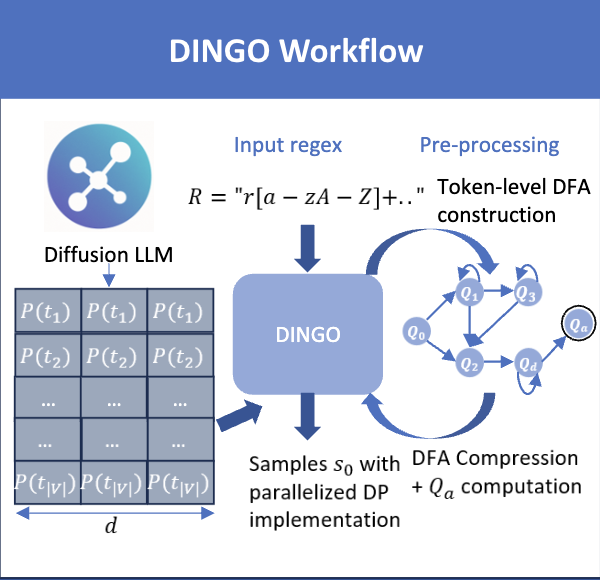
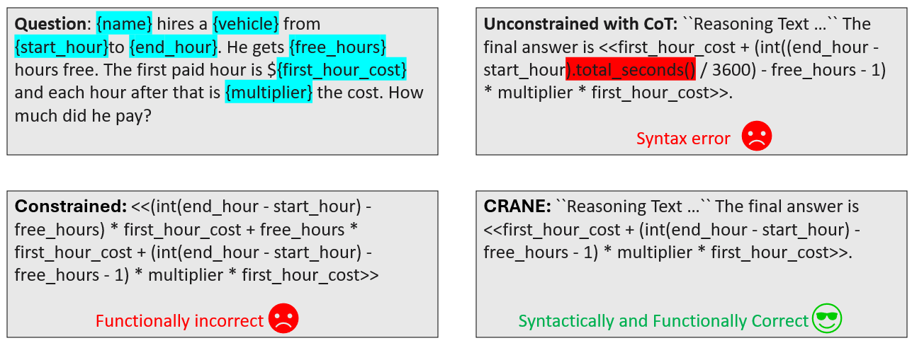
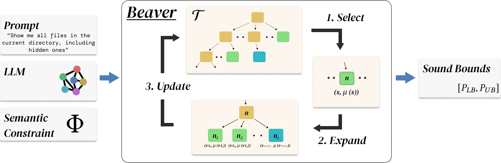
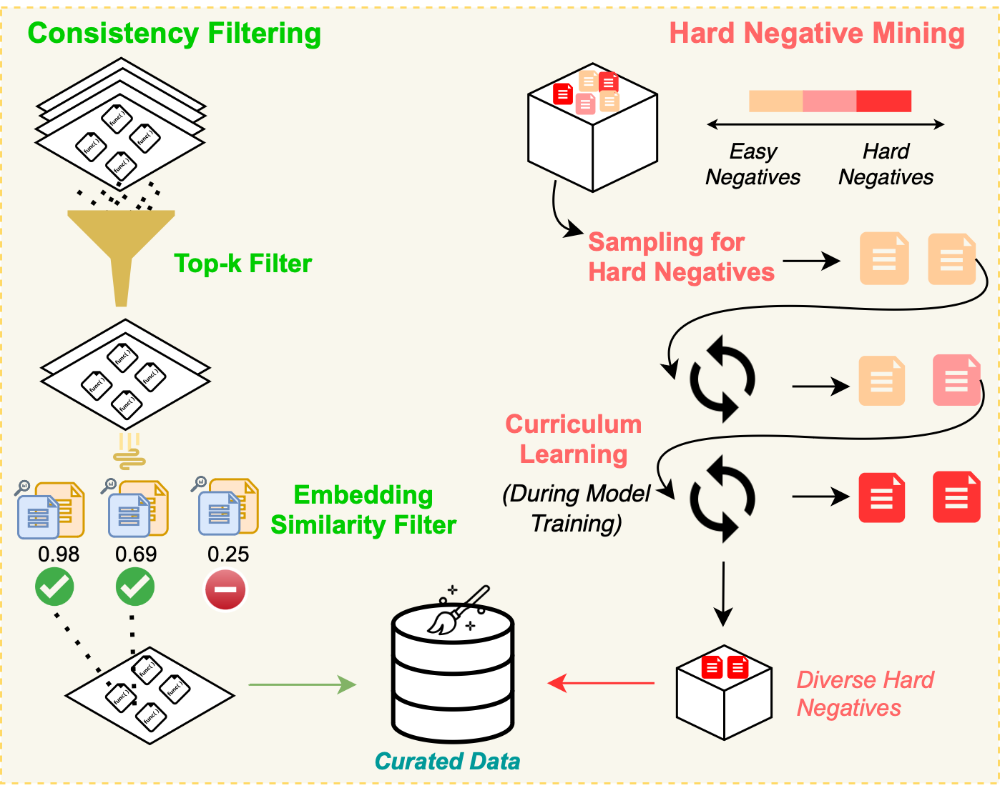
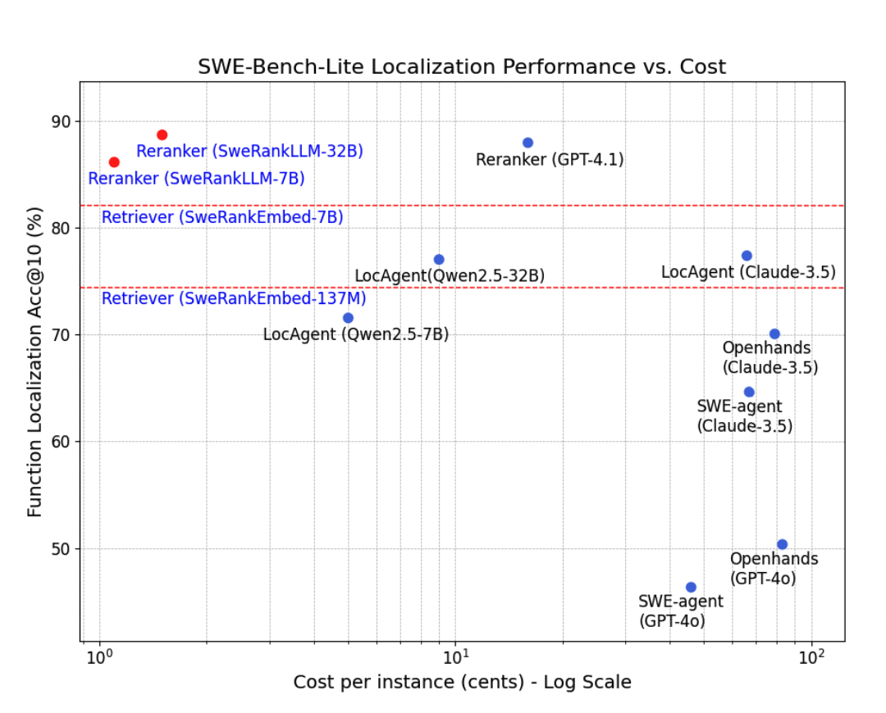
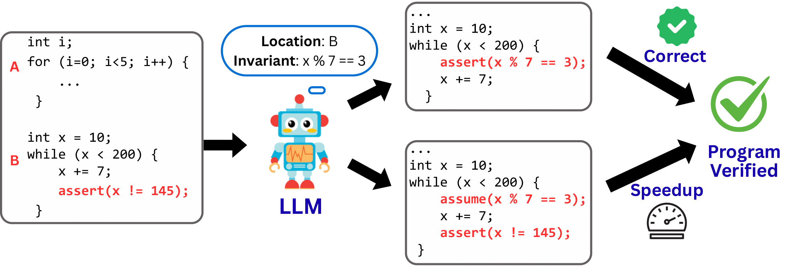

I am an incoming Computer Science PhD student at Stanford University. I previously graduated summa cum laude from the University of Illinois Urbana-Champaign (UIUC) in December 2025, earning a B.S. in Computer Science and Statistics. I have had the privilege of working with Prof. Alex Aiken (Stanford), Prof. Sasa Misailovic (UIUC), and Prof. Gagandeep Singh (UIUC). I am largely interested in the intersection of Machine Learning and Systems. My research has culminated in publications at NeurIPS, ICLR, and ICML, state-of-the-art models downloaded over 1 million times by the open-source community, and oral presentations at venues including ICLR and POPL, as well as at institutions (e.g., Stanford and CMU) and in industry.
Selected Papers





